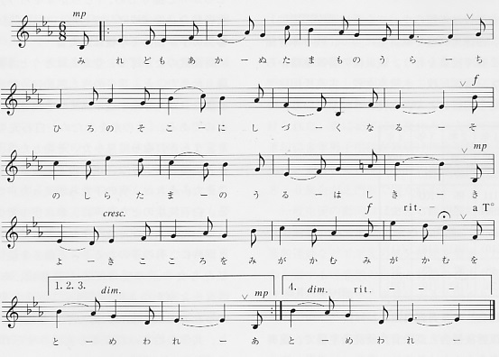
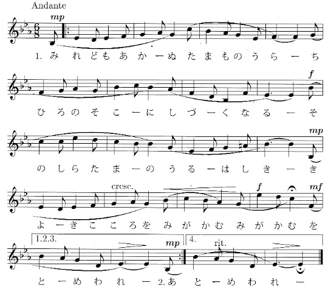
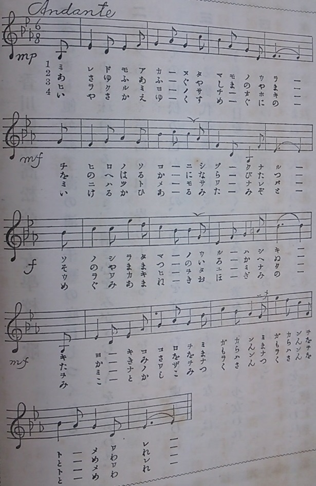

高松高等女学校校歌にいくつかある編曲
高松高女の校歌の楽譜には、次のとおり何種類かあります。
|
 玉翠会110周年記念誌より  第31回総会プログラムより |
 「晩翠」第1号(大3.11.23発行)より |
上の楽譜うち右のものは、「晩翠」第1号(大3.11.23発行)に掲載されていたものです。（なお、「晩翠」は明治33年に第1号が発刊されていますが、11号を発刊した後、大正3年に同窓会誌と校友会誌の合同誌として第1号から再発刊されています。）
高松高女の校歌は大正3年9月14日に制定されており、その直後に掲載されたものなので、おそらく原楽譜だと思います。
どの楽譜もメロディーは同じですが、音の強弱、スラーの有無などが違っています。
左の２つの楽譜は、歌いやすくするために編曲したのでしょう。ただ、原楽譜（右の楽譜）の方が、メゾピアノから、メゾフォルテ、フォルテと次第に強くなっている点で、他の楽譜に比べて分かりやすい構成のように思います。